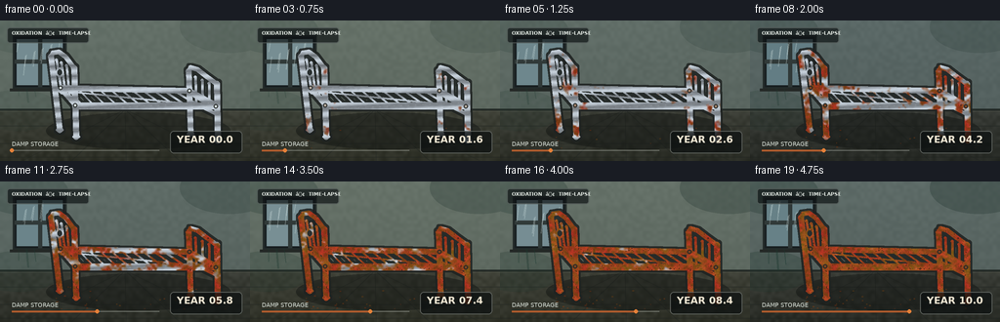
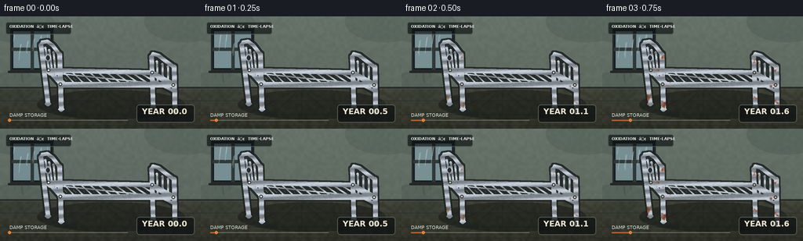

CODING AGENTS AS PIXEL WORLD MODELS
traex/GPT-5.6-Sol · phygen_160
点击播放 · 原生 RGB 像素
逐轮保存的候选
回放视频、检查图与代码变化。
每份候选均可单独播放。实际图片检查记录在下方工具轨迹中。
候选 01播放与检查图
点击播放 · 原生 RGB 像素


展开代码变化
--- 上一保存版本
+++ 本次保存版本
@@ -0,0 +1,219 @@
+from pathlib import Path
+import math
+import numpy as np
+from PIL import Image, ImageDraw, ImageFont, ImageFilter
+import artifact_io
+
+CASE_DIR = Path(__file__).resolve().parent
+W, H, N = 256, 144, 20
+S = 3
+WW, HH = W*S, H*S
+rng = np.random.default_rng(160)
+
+def scp(p):
+ return tuple(int(round(v*S)) for v in p)
+
+def poly(draw, points, **kw):
+ draw.polygon([scp(p) for p in points], **kw)
+
+def line(draw, points, fill, width, joint='curve'):
+ pts=[scp(p) for p in points]
+ draw.line(pts, fill=fill, width=max(1,int(width*S)), joint=joint)
+ # rounded end caps
+ r=width*S/2
+ for x,y in (pts[0],pts[-1]):
+ draw.ellipse((int(x-r),int(y-r),int(x+r),int(y+r)), fill=fill)
+
+def ellipse(draw, box, **kw):
+ draw.ellipse(scp((box[0],box[1]))+scp((box[2],box[3])), **kw)
+
+def make_noise(w,h,small_w,small_h, seed, blur=0):
+ rr=np.random.default_rng(seed)
+ a=(rr.random((small_h,small_w))*255).astype(np.uint8)
+ im=Image.fromarray(a).resize((w,h),Image.Resampling.BICUBIC)
+ if blur: im=im.filter(ImageFilter.GaussianBlur(blur*S))
+ return np.asarray(im,dtype=np.float32)/255.0
+
+# Stable material fields. These ensure corrosion expands, rather than flickering.
+low = make_noise(WW,HH,34,20,1601,0.5)
+mid = make_noise(WW,HH,105,59,1602,0)
+fine = make_noise(WW,HH,256,144,1603,0)
+wall_noise = make_noise(WW,HH,70,40,1604,0)
+Y,X=np.mgrid[0:HH,0:WW]
+xf=X/S; yf=Y/S
+
+# Draw all metal geometry into a common anti-aliased supersampled mask.
+metal=Image.new('L',(WW,HH),0); md=ImageDraw.Draw(metal)
+# Flat side rails and end rails
+poly(md,[(62,66),(194,69),(194,75),(62,72)],fill=255)
+poly(md,[(76,84),(221,84),(221,91),(76,91)],fill=255)
+poly(md,[(62,66),(77,83),(77,90),(61,72)],fill=255)
+poly(md,[(194,69),(222,84),(222,91),(193,75)],fill=255)
+# Mattress support slats in perspective
+for i in range(12):
+ q=(i+0.55)/12
+ fx=62+(194-62)*q; fy=69+(72-69)*q
+ nx=77+(221-77)*q; ny=86+(88-86)*q
+ line(md,[(fx,fy),(nx,ny)],255,2.3)
+# longitudinal center brace
+line(md,[(65,72),(212,87)],255,2.0)
+# headboard posts and sculpted top
+line(md,[(52,37),(61,112)],255,6.0)
+line(md,[(76,49),(78,119)],255,6.5)
+line(md,[(52,37),(54,33),(60,32),(67,37),(76,49)],255,5.2)
+line(md,[(58,70),(77,81)],255,4.2)
+# headboard inner bars
+for q in [0.23,0.45,0.67]:
+ x0=52+(76-52)*q; yt=35+(49-35)*q
+ xb=59+(77-59)*q; yb=72+(81-72)*q
+ line(md,[(x0,yt+2),(xb,yb)],255,2.7)
+# modest decorative loops on headboard
+ellipse(md,(57,48,65,58),fill=255); ellipse(md,(58.8,50,63.2,56),fill=0)
+# footboard, taller than rails and strongly recognizable
+line(md,[(193,52),(195,116)],255,6.0)
+line(md,[(222,65),(223,123)],255,6.5)
+line(md,[(193,52),(195,48),(202,50),(211,57),(222,65)],255,5.2)
+line(md,[(194,82),(222,96)],255,4.2)
+for q in [0.24,0.48,0.72]:
+ xt=193+(222-193)*q; yt=52+(65-52)*q
+ xb=194+(222-194)*q; yb=82+(96-82)*q
+ line(md,[(xt,yt+3),(xb,yb)],255,2.7)
+# Legs/feet emphasize contact with damp floor
+for x,y in [(61,112),(78,119),(195,116),(223,123)]:
+ ellipse(md,(x-4,y-2,x+4,y+2),fill=255)
+metal_a=np.asarray(metal,dtype=np.float32)/255.0
+# Dark outline generated from mask dilation.
+outline=np.asarray(metal.filter(ImageFilter.MaxFilter(13)),dtype=np.float32)/255.0
+outline=np.clip(outline-metal_a,0,1)
+
+# Rust starts at welds, bolts, and moisture-exposed feet.
+joints=[(62,69,10),(77,87,9),(194,72,11),(221,88,11),(52,38,7),(61,108,12),
+ (78,115,12),(195,112,13),(223,119,13),(76,50,7),(193,53,8),(222,66,8)]
+joint_bias=np.zeros((HH,WW),np.float32)
+for jx,jy,sig in joints:
+ joint_bias=np.maximum(joint_bias,np.exp(-((xf-jx)**2+(yf-jy)**2)/(2*sig*sig)))
+moist_bias=np.clip((yf-77)/55,0,1)
+threshold=0.13+0.55*low+0.25*mid-0.19*joint_bias-0.10*moist_bias
+threshold=np.clip(threshold,0.025,0.94)
+
+# Chrome and rust materials.
+chrome_lum=166+42*np.cos((yf*0.57)+(xf*0.025))+12*(mid-.5)
+chrome=np.stack([chrome_lum*.94,chrome_lum*.99,chrome_lum*1.04],axis=-1)
+chrome=np.clip(chrome,65,244)
+rust=np.empty((HH,WW,3),np.float32)
+rust[...,0]=106+72*mid+20*fine
+rust[...,1]=43+39*low+15*fine
+rust[...,2]=19+18*mid
+
+# Font setup
+font_path='/usr/share/fonts/truetype/dejavu/DejaVuSans.ttf'
+bold_path='/usr/share/fonts/truetype/dejavu/DejaVuSans-Bold.ttf'
+font_small=ImageFont.truetype(font_path,6*S)
+font_tiny=ImageFont.truetype(bold_path,5*S)
+font_year=ImageFont.truetype(bold_path,10*S)
+
+frames=[]
+for k in range(N):
+ t=k/(N-1)
+ # Slow daylight/season drift, restrained so material change remains central.
+ season=0.5+0.5*math.sin(t*math.pi*3.0+0.6)
+ yy=np.linspace(0,1,HH)[:,None]
+ bg=np.empty((HH,WW,3),np.float32)
+ wall=np.array([91,105,103],np.float32)+np.array([12,10,2])*season
+ floor=np.array([56,59,54],np.float32)+np.array([8,7,2])*season
+ bg[:]=wall
+ bg += (wall_noise[...,None]-.5)*7
+ bg *= (1-0.13*yy[...,None])
+ floor_mask=yf>=91
+ floor_tex=(floor[None,None,:]+(wall_noise[...,None]-.5)*12 - ((yf-91)/53)[...,None]*18)
+ bg[floor_mask]=floor_tex[floor_mask]
+ bg=np.clip(bg,0,255).astype(np.uint8)
+ im=Image.fromarray(bg,'RGB'); d=ImageDraw.Draw(im,'RGBA')
+ # Wall, old paint seams and floor perspective
+ d.line((0,91*S,WW,91*S),fill=(31,38,35,220),width=2*S)
+ d.line((0,93*S,WW,93*S),fill=(121,126,110,45),width=1*S)
+ for x0 in [22,73,129,184,236]:
+ d.line((128*S,91*S,x0*S,HH),fill=(29,34,31,80),width=1*S)
+ for y0 in [108,126,140]: d.line((0,y0*S,WW,y0*S),fill=(25,30,28,80),width=1*S)
+ # Damp ceiling/wall bloom that subtly worsens through the years.
+ damp_alpha=int(35+45*t)
+ d.ellipse(scp((-20,-12,70,34)),fill=(34,55,49,damp_alpha))
+ d.ellipse(scp((184,-20,285,33)),fill=(31,49,44,damp_alpha))
+ d.ellipse(scp((-25,71,62,113)),fill=(31,53,44,int(30+35*t)))
+ # Window with rainy glass, frame, sill
+ d.rectangle(scp((13,15,68,70)),fill=(24,31,33,255),outline=(36,43,42,255),width=2*S)
+ sky=(99+int(22*season),125+int(19*season),132+int(17*season),255)
+ d.rectangle(scp((17,19,64,66)),fill=sky)
+ d.rectangle(scp((39,18,43,68)),fill=(48,57,56,255))
+ d.rectangle(scp((15,40,66,44)),fill=(49,58,57,255))
+ d.line(scp((10,71,71,71)),fill=(36,40,38,255),width=3*S)
+ # Rain tracks shift, suggesting compressed time while scene remains fixed.
+ for ri in range(10):
+ rx=19+((ri*17+7*k)%43); ry=20+((ri*11+3*k)%18)
+ d.line(scp((rx,ry,rx-2,ry+12+(ri%3)*4)),fill=(210,227,226,80),width=max(1,S))
+ # irregular damp trails beneath window
+ for j,x0 in enumerate([19,27,35,53,61]):
+ leng=8+((j*7)%13)+7*t
+ d.line(scp((x0,69,x0+math.sin(j)*2,69+leng)),fill=(28,55,46,int(50+55*t)),width=(1+(j%2))*S)
+ # Bed shadow and progressively accumulating rust flakes
+ d.ellipse(scp((47,94,236,132)),fill=(16,19,17,115))
+ for i in range(74):
+ born=(i/74)*0.93
+ if t>born:
+ rr=np.random.default_rng(8100+i)
+ px=float(rr.uniform(56,226)); py=float(rr.uniform(108,132))
+ # concentration under legs/rails
+ if i%3==0: px=float(rr.choice([61,78,195,223])+rr.normal(0,7))
+ rad=float(rr.uniform(.35,1.15))*S
+ col=(92+int(rr.uniform(0,45)),42+int(rr.uniform(0,25)),19,150)
+ d.ellipse((px*S-rad,py*S-rad*.45,px*S+rad,py*S+rad*.45),fill=col)
+ arr=np.asarray(im,dtype=np.float32)
+ # Metallic black rim gives tubes physical volume.
+ rim_alpha=(outline*.88)[...,None]
+ arr=arr*(1-rim_alpha)+np.array([31,35,34],np.float32)*rim_alpha
+ # Composite chrome body.
+ ma=metal_a[...,None]
+ arr=arr*(1-ma)+chrome*ma
+ # Progressive oxidation. Nonlinear early phase keeps frame visibly new at start.
+ progress=max(0.0,(t-0.015)/0.985)**0.88
+ rust_a=np.clip((progress-threshold)*5.0,0,1)*metal_a
+ # rich orange active edge around advancing oxidation front
+ edge=np.exp(-((progress-threshold)/0.055)**2)*metal_a*(progress>0)
+ rust_col=rust.copy()
+ rust_col[...,0]+=edge*35; rust_col[...,1]+=edge*17
+ ra=rust_a[...,None]
+ arr=arr*(1-ra)+rust_col*ra
+ # Pitting appears only after substantial oxidation.
+ pits=((fine>.83)&(mid>.54)).astype(np.float32)*np.clip((rust_a-.38)*1.8,0,0.75)*metal_a
+ arr=arr*(1-pits[...,None])+np.array([54,29,20],np.float32)*pits[...,None]
+ # Slim specular streak persists only on remaining unoxidized metal.
+ shine=((np.sin(yf*1.75+xf*.08)>0.94).astype(np.float32)*metal_a*(1-rust_a)*.28)[...,None]
+ arr=arr*(1-shine)+np.array([244,249,247],np.float32)*shine
+ out=Image.fromarray(np.clip(arr,0,255).astype(np.uint8),'RGB')
+ od=ImageDraw.Draw(out,'RGBA')
+ # Weld/bolt caps (the earliest corrosion foci)
+ for bx,by in [(62,69),(77,87),(194,72),(221,88)]:
+ r=2.1*S
+ rustiness=np.clip((progress-.05)*2.5,0,1)
+ c=(int(205-85*rustiness),int(214-147*rustiness),int(213-180*rustiness),255)
+ od.ellipse((bx*S-r,by*S-r,bx*S+r,by*S+r),fill=(36,39,38,255))
+ od.ellipse((bx*S-r*.62,by*S-r*.62,bx*S+r*.62,by*S+r*.62),fill=c)
+ # Minimal documentary overlay
+ od.rounded_rectangle(scp((7,7,91,23)),radius=3*S,fill=(12,17,18,174),outline=(192,205,198,75),width=S)
+ od.text(scp((12,10)),"OXIDATION ⢠TIME-LAPSE",font=font_tiny,fill=(229,235,229,235))
+ od.rounded_rectangle(scp((174,113,248,136)),radius=4*S,fill=(12,16,16,185),outline=(205,211,201,90),width=S)
+ year=t*10
+ od.text(scp((181,116)),f"YEAR {year:04.1f}",font=font_year,fill=(240,230,210,255))
+ # Timeline bar with moving amber marker
+ od.line(scp((12,133,163,133)),fill=(214,220,210,95),width=S)
+ od.line(scp((12,133,12+151*t,133)),fill=(184,92,42,230),width=2*S)
+ mx=(12+151*t)*S; my=133*S
+ od.ellipse((mx-2*S,my-2*S,mx+2*S,my+2*S),fill=(229,129,57,255))
+ # small damp condition caption
+ od.text(scp((12,123)),"DAMP STORAGE",font=font_small,fill=(218,225,216,190))
+ out=out.resize((W,H),Image.Resampling.LANCZOS)
+ frames.append(np.asarray(out,dtype=np.uint8))
+
+frames=np.stack(frames,axis=0)
+artifact_io.save(frames,CASE_DIR)
+print(f"saved {frames.shape} RGB video to {CASE_DIR}")
可观测工具轨迹
实际执行的命令与返回图片。
命令 1exit 0
/bin/bash -lc "cat prompt.txt && printf '\\n---RULES---\\n' && cat GENERATION_RULES.md && printf '\\n---SPEC---\\n' && cat task_spec.json"
命令 2exit 0
/bin/bash -lc "find . -maxdepth 2 -type f -printf '%p\\n' | sort"
命令 3exit 0
/bin/bash -lc 'cat artifact_io.py'
命令 4exit 0
/bin/bash -lc "cat > generate.py <<'PY'
from pathlib import Path
import math
import numpy as np
from PIL import Image, ImageDraw, ImageFont, ImageFilter
import artifact_io
CASE_DIR = Path(__file__).resolve().parent
W, H, N = 256, 144, 20
S = 3
WW, HH = W*S, H*S
rng = np.random.default_rng(160)
def scp(p):
return tuple(int(round(v*S)) for v in p)
def poly(draw, points, **kw):
draw.polygon([scp(p) for p in points], **kw)
def line(draw, points, fill, width, joint='curve'):
pts=[scp(p) for p in points]
draw.line(pts, fill=fill, width=max(1,int(width*S)), joint=joint)
# rounded end caps
r=width*S/2
for x,y in (pts[0],pts[-1]):
draw.ellipse((int(x-r),int(y-r),int(x+r),int(y+r)), fill=fill)
def ellipse(draw, box, **kw):
draw.ellipse(scp((box[0],box[1]))+scp((box[2],box[3])), **kw)
def make_noise(w,h,small_w,small_h, seed, blur=0):
rr=np.random.default_rng(seed)
a=(rr.random((small_h,small_w))*255).astype(np.uint8)
im=Image.fromarray(a).resize((w,h),Image.Resampling.BICUBIC)
if blur: im=im.filter(ImageFilter.GaussianBlur(blur*S))
return np.asarray(im,dtype=np.float32)/255.0
# Stable material fields. These ensure corrosion expands, rather than flickering.
low = make_noise(WW,HH,34,20,1601,0.5)
mid = make_noise(WW,HH,105,59,1602,0)
fine = make_noise(WW,HH,256,144,1603,0)
wall_noise = make_noise(WW,HH,70,40,1604,0)
Y,X=np.mgrid[0:HH,0:WW]
xf=X/S; yf=Y/S
# Draw all metal geometry into a common anti-aliased supersampled mask.
metal=Image.new('L',(WW,HH),0); md=ImageDraw.Draw(metal)
# Flat side rails and end rails
poly(md,[(62,66),(194,69),(194,75),(62,72)],fill=255)
poly(md,[(76,84),(221,84),(221,91),(76,91)],fill=255)
poly(md,[(62,66),(77,83),(77,90),(61,72)],fill=255)
poly(md,[(194,69),(222,84),(222,91),(193,75)],fill=255)
# Mattress support slats in perspective
for i in range(12):
q=(i+0.55)/12
fx=62+(194-62)*q; fy=69+(72-69)*q
nx=77+(221-77)*q; ny=86+(88-86)*q
line(md,[(fx,fy),(nx,ny)],255,2.3)
# longitudinal center brace
line(md,[(65,72),(212,87)],255,2.0)
# headboard posts and sculpted top
line(md,[(52,37),(61,112)],255,6.0)
line(md,[(76,49),(78,119)],255,6.5)
line(md,[(52,37),(54,33),(60,32),(67,37),(76,49)],255,5.2)
line(md,[(58,70),(77,81)],255,4.2)
# headboard inner bars
for q in [0.23,0.45,0.67]:
x0=52+(76-52)*q; yt=35+(49-35)*q
xb=59+(77-59)*q; yb=72+(81-72)*q
line(md,[(x0,yt+2),(xb,yb)],255,2.7)
# modest decorative loops on headboard
ellipse(md,(57,48,65,58),fill=255); ellipse(md,(58.8,50,63.2,56),fill=0)
# footboard, taller than rails and strongly recognizable
line(md,[(193,52),(195,116)],255,6.0)
line(md,[(222,65),(223,123)],255,6.5)
line(md,[(193,52),(195,48),(202,50),(211,57),(222,65)],255,5.2)
line(md,[(194,82),(222,96)],255,4.2)
for q in [0.24,0.48,0.72]:
xt=193+(222-193)*q; yt=52+(65-52)*q
xb=194+(222-194)*q; yb=82+(96-82)*q
line(md,[(xt,yt+3),(xb,yb)],255,2.7)
# Legs/feet emphasize contact with damp floor
for x,y in [(61,112),(78,119),(195,116),(223,123)]:
ellipse(md,(x-4,y-2,x+4,y+2),fill=255)
metal_a=np.asarray(metal,dtype=np.float32)/255.0
# Dark outline generated from mask dilation.
outline=np.asarray(metal.filter(ImageFilter.MaxFilter(13)),dtype=np.float32)/255.0
outline=np.clip(outline-metal_a,0,1)
# Rust starts at welds, bolts, and moisture-exposed feet.
joints=[(62,69,10),(77,87,9),(194,72,11),(221,88,11),(52,38,7),(61,108,12),
(78,115,12),(195,112,13),(223,119,13),(76,50,7),(193,53,8),(222,66,8)]
joint_bias=np.zeros((HH,WW),np.float32)
for jx,jy,sig in joints:
joint_bias=np.maximum(joint_bias,np.exp(-((xf-jx)**2+(yf-jy)**2)/(2*sig*sig)))
moist_bias=np.clip((yf-77)/55,0,1)
threshold=0.13+0.55*low+0.25*mid-0.19*joint_bias-0.10*moist_bias
threshold=np.clip(threshold,0.025,0.94)
# Chrome and rust materials.
chrome_lum=166+42*np.cos((yf*0.57)+(xf*0.025))+12*(mid-.5)
chrome=np.stack([chrome_lum*.94,chrome_lum*.99,chrome_lum*1.04],axis=-1)
chrome=np.clip(chrome,65,244)
rust=np.empty((HH,WW,3),np.float32)
rust[...,0]=106+72*mid+20*fine
rust[...,1]=43+39*low+15*fine
rust[...,2]=19+18*mid
# Font setup
font_path='/usr/share/fonts/truetype/dejavu/DejaVuSans.ttf'
bold_path='/usr/share/fonts/truetype/dejavu/DejaVuSans-Bold.ttf'
font_small=ImageFont.truetype(font_path,6*S)
font_tiny=ImageFont.truetype(bold_path,5*S)
font_year=ImageFont.truetype(bold_path,10*S)
frames=[]
for k in range(N):
t=k/(N-1)
# Slow daylight/season drift, restrained so material change remains central.
season=0.5+0.5*math.sin(t*math.pi*3.0+0.6)
yy=np.linspace(0,1,HH)[:,None]
bg=np.empty((HH,WW,3),np.float32)
wall=np.array([91,105,103],np.float32)+np.array([12,10,2])*season
floor=np.array([56,59,54],np.float32)+np.array([8,7,2])*season
bg[:]=wall
bg += (wall_noise[...,None]-.5)*7
bg *= (1-0.13*yy[...,None])
floor_mask=yf>=91
floor_tex=(floor[None,None,:]+(wall_noise[...,None]-.5)*12 - ((yf-91)/53)[...,None]*18)
bg[floor_mask]=floor_tex[floor_mask]
bg=np.clip(bg,0,255).astype(np.uint8)
im=Image.fromarray(bg,'RGB'); d=ImageDraw.Draw(im,'RGBA')
# Wall, old paint seams and floor perspective
d.line((0,91*S,WW,91*S),fill=(31,38,35,220),width=2*S)
d.line((0,93*S,WW,93*S),fill=(121,126,110,45),width=1*S)
for x0 in [22,73,129,184,236]:
d.line((128*S,91*S,x0*S,HH),fill=(29,34,31,80),width=1*S)
for y0 in [108,126,140]: d.line((0,y0*S,WW,y0*S),fill=(25,30,28,80),width=1*S)
# Damp ceiling/wall bloom that subtly worsens through the years.
damp_alpha=int(35+45*t)
d.ellipse(scp((-20,-12,70,34)),fill=(34,55,49,damp_alpha))
d.ellipse(scp((184,-20,285,33)),fill=(31,49,44,damp_alpha))
d.ellipse(scp((-25,71,62,113)),fill=(31,53,44,int(30+35*t)))
# Window with rainy glass, frame, sill
d.rectangle(scp((13,15,68,70)),fill=(24,31,33,255),outline=(36,43,42,255),width=2*S)
sky=(99+int(22*season),125+int(19*season),132+int(17*season),255)
d.rectangle(scp((17,19,64,66)),fill=sky)
d.rectangle(scp((39,18,43,68)),fill=(48,57,56,255))
d.rectangle(scp((15,40,66,44)),fill=(49,58,57,255))
d.line(scp((10,71,71,71)),fill=(36,40,38,255),width=3*S)
# Rain tracks shift, suggesting compressed time while scene remains fixed.
for ri in range(10):
rx=19+((ri*17+7*k)%43); ry=20+((ri*11+3*k)%18)
d.line(scp((rx,ry,rx-2,ry+12+(ri%3)*4)),fill=(210,227,226,80),width=max(1,S))
# irregular damp trails beneath window
for j,x0 in enumerate([19,27,35,53,61]):
leng=8+((j*7)%13)+7*t
d.line(scp((x0,69,x0+math.sin(j)*2,69+leng)),fill=(28,55,46,int(50+55*t)),width=(1+(j%2))*S)
# Bed shadow and progressively accumulating rust flakes
d.ellipse(scp((47,94,236,132)),fill=(16,19,17,115))
for i in range(74):
born=(i/74)*0.93
if t>born:
rr=np.random.default_rng(8100+i)
px=float(rr.uniform(56,226)); py=float(rr.uniform(108,132))
# concentration under legs/rails
if i%3==0: px=float(rr.choice([61,78,195,223])+rr.normal(0,7))
rad=float(rr.uniform(.35,1.15))*S
col=(92+int(rr.uniform(0,45)),42+int(rr.uniform(0,25)),19,150)
d.ellipse((px*S-rad,py*S-rad*.45,px*S+rad,py*S+rad*.45),fill=col)
arr=np.asarray(im,dtype=np.float32)
# Metallic black rim gives tubes physical volume.
rim_alpha=(outline*.88)[...,None]
arr=arr*(1-rim_alpha)+np.array([31,35,34],np.float32)*rim_alpha
# Composite chrome body.
ma=metal_a[...,None]
arr=arr*(1-ma)+chrome*ma
# Progressive oxidation. Nonlinear early phase keeps frame visibly new at start.
progress=max(0.0,(t-0.015)/0.985)**0.88
rust_a=np.clip((progress-threshold)*5.0,0,1)*metal_a
# rich orange active edge around advancing oxidation front
edge=np.exp(-((progress-threshold)/0.055)**2)*metal_a*(progress>0)
rust_col=rust.copy()
rust_col[...,0]+=edge*35; rust_col[...,1]+=edge*17
ra=rust_a[...,None]
arr=arr*(1-ra)+rust_col*ra
# Pitting appears only after substantial oxidation.
pits=((fine>.83)&(mid>.54)).astype(np.float32)*np.clip((rust_a-.38)*1.8,0,0.75)*metal_a
arr=arr*(1-pits[...,None])+np.array([54,29,20],np.float32)*pits[...,None]
# Slim specular streak persists only on remaining unoxidized metal.
shine=((np.sin(yf*1.75+xf*.08)>0.94).astype(np.float32)*metal_a*(1-rust_a)*.28)[...,None]
arr=arr*(1-shine)+np.array([244,249,247],np.float32)*shine
out=Image.fromarray(np.clip(arr,0,255).astype(np.uint8),'RGB')
od=ImageDraw.Draw(out,'RGBA')
# Weld/bolt caps (the earliest corrosion foci)
for bx,by in [(62,69),(77,87),(194,72),(221,88)]:
r=2.1*S
rustiness=np.clip((progress-.05)*2.5,0,1)
c=(int(205-85*rustiness),int(214-147*rustiness),int(213-180*rustiness),255)
od.ellipse((bx*S-r,by*S-r,bx*S+r,by*S+r),fill=(36,39,38,255))
od.ellipse((bx*S-r*.62,by*S-r*.62,bx*S+r*.62,by*S+r*.62),fill=c)
# Minimal documentary overlay
od.rounded_rectangle(scp((7,7,91,23)),radius=3*S,fill=(12,17,18,174),outline=(192,205,198,75),width=S)
od.text(scp((12,10)),\"OXIDATION ⢠TIME-LAPSE\",font=font_tiny,fill=(229,235,229,235))
od.rounded_rectangle(scp((174,113,248,136)),radius=4*S,fill=(12,16,16,185),outline=(205,211,201,90),width=S)
year=t*10
od.text(scp((181,116)),f\"YEAR {year:04.1f}\",font=font_year,fill=(240,230,210,255))
# Timeline bar with moving amber marker
od.line(scp((12,133,163,133)),fill=(214,220,210,95),width=S)
od.line(scp((12,133,12+151*t,133)),fill=(184,92,42,230),width=2*S)
mx=(12+151*t)*S; my=133*S
od.ellipse((mx-2*S,my-2*S,mx+2*S,my+2*S),fill=(229,129,57,255))
# small damp condition caption
od.text(scp((12,123)),\"DAMP STORAGE\",font=font_small,fill=(218,225,216,190))
out=out.resize((W,H),Image.Resampling.LANCZOS)
frames.append(np.asarray(out,dtype=np.uint8))
frames=np.stack(frames,axis=0)
artifact_io.save(frames,CASE_DIR)
print(f\"saved {frames.shape} RGB video to {CASE_DIR}\")
PY
python generate.py"命令 5exit 0
/bin/bash -lc "python - <<'PY'
from pathlib import Path
import numpy as np
from PIL import Image
p=Path('.')
z=np.load('pixels.npz')['pixels']
print('pixels',z.shape,z.dtype,'frames',len(list((p/'frames').glob('*.png'))))
for i in [0,5,10,15,19]:
im=Image.open(p/'frames'/f'{i:02d}.png')
print(i, im.mode, im.size, np.asarray(im).mean().round(2), np.asarray(im).std().round(2))
print('artifacts',[(x.name,x.stat().st_size) for x in [p/'pixels.npz',p/'index.html',p/'inspection.png']])
PY"视觉工具实际返回图片 1

保存候选 1 份；完成命令 5 次；可验证图片返回 1 张。原始 API 响应与完整日志保留在本地。